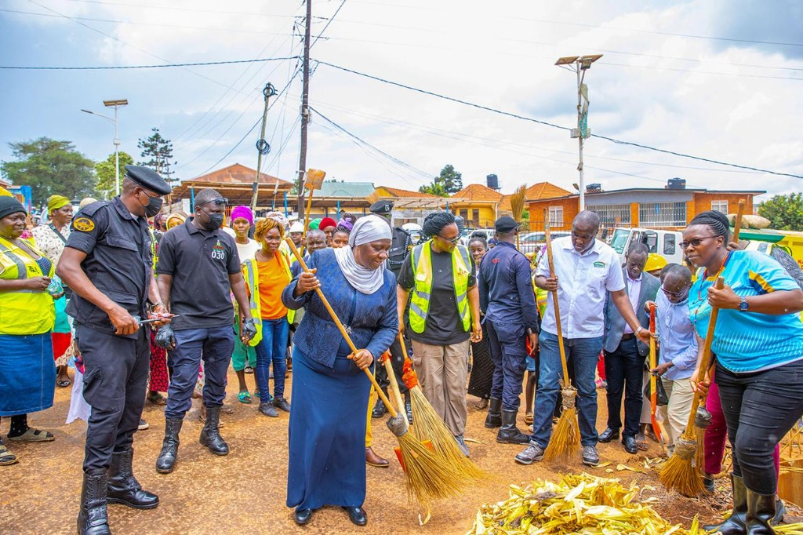

01 / Mission & Background
Bridging the waste information gap in Kyebando
Residents in Katale, Nsooba, Central, and Kisalosalo zones have long faced uncertainty around when KCCA trucks pass, where official staging points are located, which private collectors are licensed, and how to report blocked drains quickly. Because KCCA's bring-to-truck model relies on residents bringing out waste at the exact arrival window, missing timetable information directly leads to roadside dumping and clogged culverts.
Kyebando Clean solves this gap with a fast, low-data mobile web resource maintained in coordination with Kyebando LC1 leaders and local sanitation desks.
Website coursework project by Victoria University Group 15 · Kyebando, Kawempe Division, Kampala.

02 / Verified Contacts
Project, LC1 & KCCA Contact Directory
MEDIA / PHOTOGRAPHS & VIDEO
Media used on this website
Waste trucks, sorting bins, compost containers and community clean-ups are shown using project-provided photographs and a short educational video. These images illustrate waste-management activities and may not depict Kyebando itself.
Before public release: the project team must confirm each photograph and video has permission or an appropriate licence for website use.
This update also includes photos of rubbish trucks, recycling bins, neighbourhood cleanups, composting and drainage clearing, plus an approximately two-minute recycling video supplied for the project. Image scenes may be outside Kyebando; captions identify them as illustrative.

03 / Source Reference List
Public Sources & Media Credits
-
2026 / KCCA DEPLOYMENT & FEES
Manzil, K. I., & Nakirigya, S. (14 August 2026). “KCCA deploys 9 private waste collectors ahead of next National Cleaning Day.” Daily Monitor.
Read Daily Monitor source ↗ -
2026 / KCCA STAGING POINTS
The Independent, Uganda. (3 August 2026). “KCCA plans garbage collection points after National Cleanup exposes waste system gaps.” Via allAfrica.
Read The Independent report ↗ -
2025 / KYEBANDO COMMUNITY & YOUTH ACTION
Nakibuule, C. (3 August 2025). “Kyebando residents raise alarm over garbage crisis and health threats.” Nile Post.
Read Nile Post story ↗ -
2024 / KAMPALA WASTE POLICY CONTEXT
Mwesigwa, A. (4 November 2024). “Kampala garbage, an issue much wider than just Kiteezi.” Economic Policy Research Centre (EPRC).
Read EPRC analysis ↗ -
2024 / ADMINISTRATIVE BOUNDARIES
Uganda Bureau of Statistics (UBOS), National Population and Housing Census 2024 Explorer — Kyebando Parish, Kawempe Division.
Open UBOS Parish Explorer ↗ -
IMAGE CREDITS
Photos and recycling footage were supplied for this website project. Some examples are outside Uganda; no endorsement of the website by pictured people or organisations is implied. The group must check permission or licence details before a public launch.
04 / Privacy Notice
How we collect and handle your data
Kyebando Clean is designed to protect resident privacy and work without user accounts, tracking cookies, or photo uploads:
- Minimal data collection: Forms only ask for the details needed to act on your request—such as your zone, landmark, issue description, and a callback phone number.
- Purpose limitation: Problem reports are routed strictly to project leads and Kyebando LC1 leaders (kyebandoclean@gmail.com) to resolve sanitation issues. Collector directory submissions are published only after explicit consent and verification.
- No third-party ad tracking: We do not sell, rent, or share resident phone numbers with commercial marketers. External links to KCCA and news outlets are governed by their respective privacy policies.
- Form delivery: Form data is processed by the website hosting form service once Netlify Forms is enabled. The site administrator must configure email notifications and data retention before public use. Do not treat the confirmation page as evidence that an LC1 office has received a message.